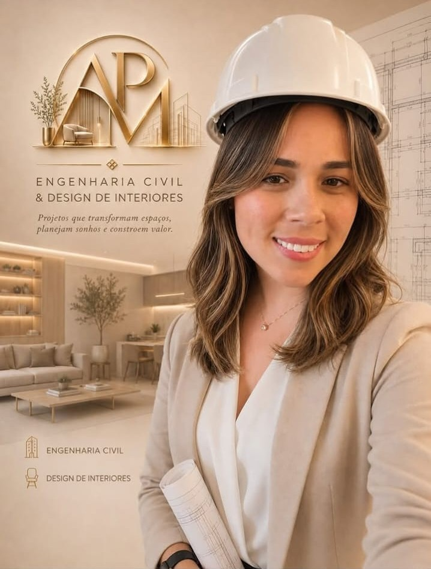

Projetos


Transformando ambientes em espaços únicos para viver melhor.
Solicitar OrçamentoAna Mansur é engenheira civil e designer de interiores. No mesmo projeto, ela calcula a estrutura que sustenta a parede e escolhe a cor que vai cobri-la — e é exatamente nesse ponto de encontro que o trabalho dela acontece.
A formação em engenharia veio primeiro, ainda quando o interesse por arquitetura e design já disputava espaço com o rigor técnico dos cálculos. Em vez de escolher um lado, Ana especializou-se nos dois: hoje decide desde a viga que não pode ceder até o tecido do sofá que vai por cima dela.
"Um ambiente bonito que não funciona no dia a dia não é um bom projeto — e um projeto tecnicamente perfeito que ninguém quer habitar, também não."
Na prática, isso significa acompanhar cada obra do primeiro esboço à última demão de tinta, em residências, escritórios e espaços comerciais, sem deixar nada se perder entre o papel e a parede.

Projetos completos para casas e apartamentos.
Ambientes elegantes, modernos e funcionais.
Orientação técnica para sua obra ou reforma.